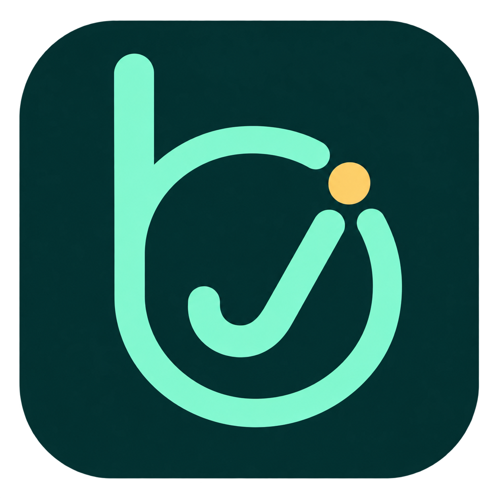

今日待办包含逾期事项；最近三项按截止时间排列，不重复显示今日事项。未设时间的事项排在最后。
支持 PNG、JPEG、WebP，最大 20 MB。背景图片会保存在本机；主窗口与浮窗同步使用。
关闭窗口后，不急及及代办留在托盘检查提醒。关机或休眠期间无法弹出通知，恢复运行后补提醒；多个错过节点合并提示。
首次运行打包版时自动创建。移动程序文件后，可在此重新创建快捷方式。
通知也会在事项上留下“已提醒”标记。Windows 勿扰模式可能隐藏通知横幅。
数据保存在当前用户的 AppData 中。导入会追加事项，不覆盖现有列表。
不急及及代办 · bjjj todo · 1.1.0
删除后可通过之前导出的备份恢复。